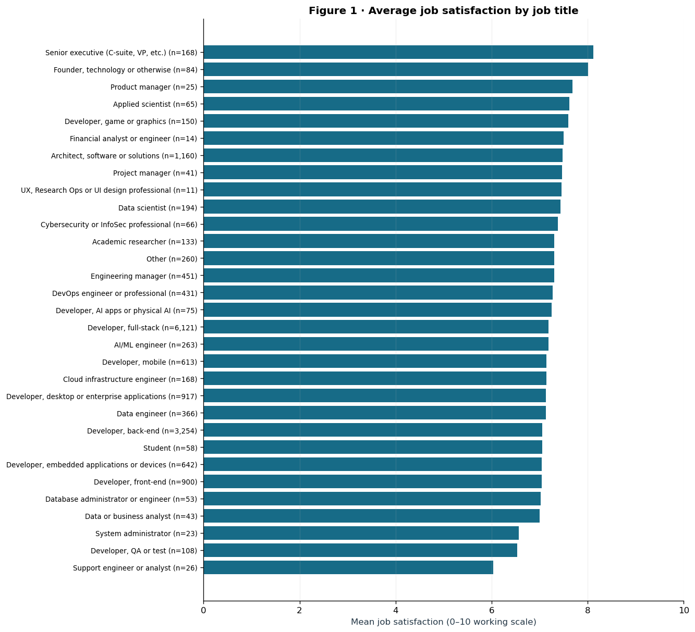
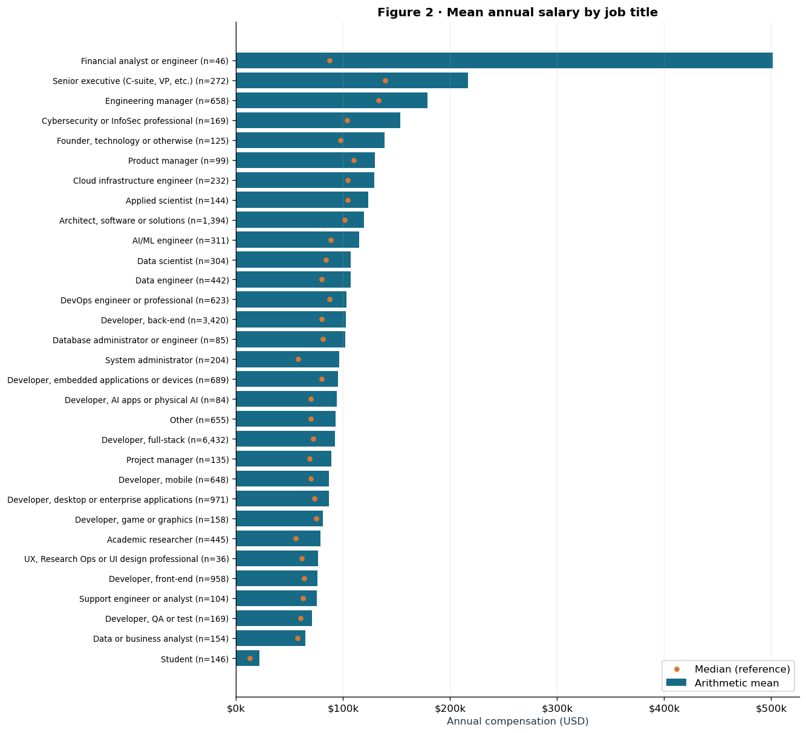
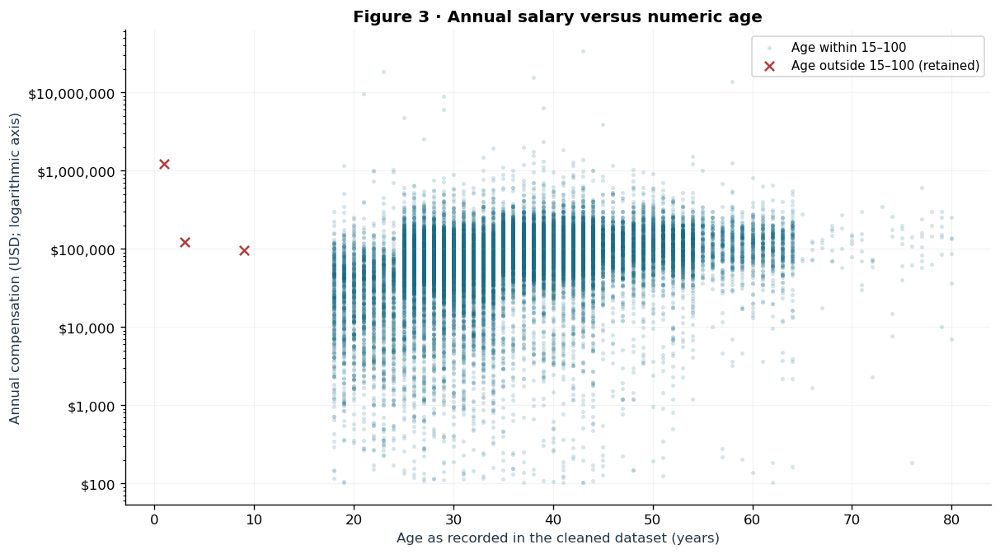

Figure 1 · Job satisfaction by title
View exact notebook Figure 1

Averages use valid ratings on the working 0–10 scale. Small groups can produce unstable rankings. The title selector changes the display only.
A closer look at remote work, education and salary—for technology leaders making thoughtful workforce decisions.
Prepared by Julian Peinado
MIE1624 · Assignment 1, Question 4
Read these results as associations. They do not show what a person would earn by switching work mode or obtaining a degree.

Averages use valid ratings on the working 0–10 scale. Small groups can produce unstable rankings. The title selector changes the display only.

Arithmetic means retain every positive salary within the selected population. Annual USD; bars start at zero. Hover over a bar to inspect its group size.

All differences below are Remote − Hybrid. The analysis compares exact survey labels “Remote” and “Hybrid”; it does not combine other work arrangements.
Salary standard deviation describes variation between people. Standard error, used later, describes uncertainty in an estimated mean or difference.
Zero salary outliers are removed from the primary analysis. A large value is not, by itself, proof of an error. Keeping it preserves the question about the salary distribution within the selected population. Group-specific 1.5×IQR fences are a separate sensitivity analysis, not a replacement chosen for a smaller p-value. IQR is the distance between the first and third quartiles.
The sensitivity result concerns differently truncated groups. It helps assess tail influence; it does not establish which salaries are incorrect.
Two-sided hypotheses: H₀: μR − μH = 0; H₁: μR − μH ≠ 0. Significance threshold α = 0.05. Sample variances use n − 1.
A p-value is a tail probability under the null model and assumptions—not the probability that the null is true. Failing to reject would not prove equality.
The bootstrap SD uses B − 1. The standardized curve has mean zero and SD one by construction; it is not a null distribution. Resampling preserves each empirical group’s shape, including its extreme salaries. The legend controls hide a displayed series only; the analysis does not change.
Shift each empirical group to the common combined mean, keeping its variance and shape. Recalculate the pooled SE for each replication and count absolute null t statistics at least as extreme as the observed t. This is an approximate calibration at the original respondent counts. It is distinct from testing the bootstrap means.
A 95% confidence procedure aims to cover the fixed population gap in 95% of repeated samples under its assumptions. It is not a 95% probability that the fixed gap lies inside this particular interval. Skewness, variance estimation and Monte Carlo error can make the two methods differ; they need not always reach the same decision.
Mood’s test compares counts above versus at/below the pooled median, using a chi-square approximation. The median bootstrap instead evaluates a dollar-valued gap after imposing equal empirical medians. Different statistics and approximations explain why their p-values need not be close. Medians are less sensitive to extreme salaries than means.
Retain all positive finite salaries in the primary comparison, with zero outlier exclusions. The separate group-specific IQR restriction checks how much the high-salary tail influences the results.
H₀: μB = μM = μP. The alternative is that at least one population mean differs. Ordinary ANOVA compares between-group variation with within-group variation; its exact F reference assumes independent observations, equal population variances and normal within-group errors.
The three pairwise comparisons share the same group draws and are dependent. These are descriptive uncertainty views, not formal post-hoc tests. Selecting a pair changes the display only.
Shift each degree group to the common combined mean, then resample at the original group sizes. Compare null F statistics with the observed F, using the upper tail and the plus-one correction. The approach preserves unequal empirical variances and shapes, but is approximate and has limited precision for rare tail events. Neither omnibus test identifies significant pairs.
Work arrangement and education are useful starting points for investigating compensation differences. These unadjusted comparisons are insufficient to set a pay premium or justify a hiring restriction.
Before changing remote-work pay bands, compare like-for-like roles, seniority, experience and location in internal compensation data. For hiring, assess job-relevant skills rather than treating degree-group averages as a screening rule. These are proposed next steps, not effects demonstrated by this survey.
Compensation is self-reported and the survey is self-selected. Geographic salary differences and the mix of roles and experience can confound the comparisons. Independence cannot be established from these columns.
Bootstrapping models sampling variation conditional on the observed data. It does not remove bias, confounding or uncertainty about unobserved extremes. Statistical significance does not establish practical importance or causality.
The dashboard contains summary tables, title-level averages, histogram bins, a suppressed age–salary count grid, and rendered notebook figures. The exact age scatterplot is supplied as an image; its respondent coordinates are not exposed as interactive records. It contains no respondent records, raw CSV or notebook download. Display rounding: annual USD and variances to two decimals, counts as integers, test statistics to five significant digits, and small probabilities in scientific notation. Full-precision summary values drive every numerical display.
Tests across the assignment are not adjusted as one family. No pair-specific inferential claim is made. The notebook remains the detailed implementation; this dashboard translates its results for a client audience.
Methods: SciPy statistics documentation · Shalizi, The Bootstrap